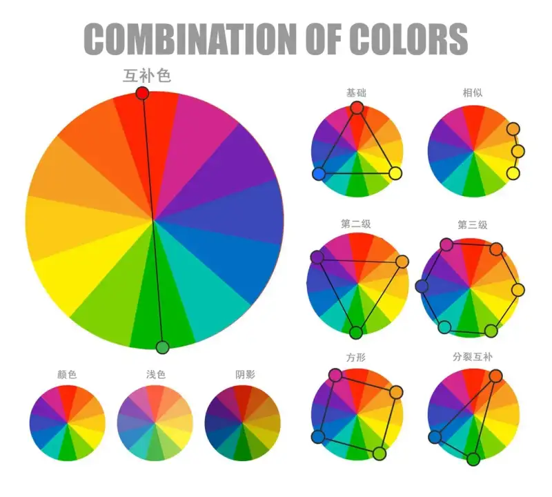
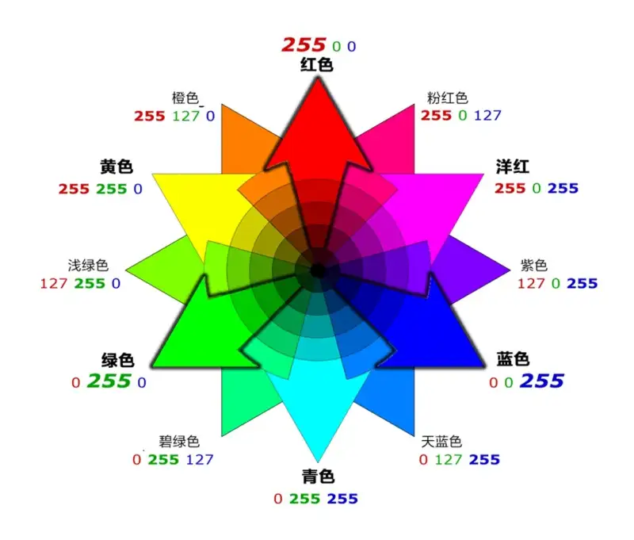
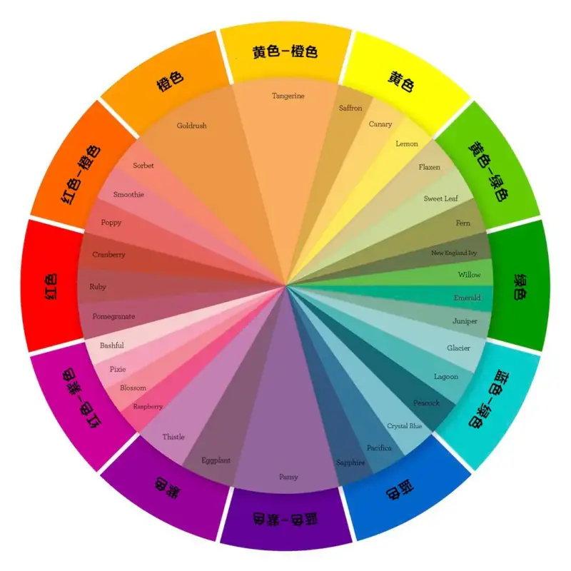
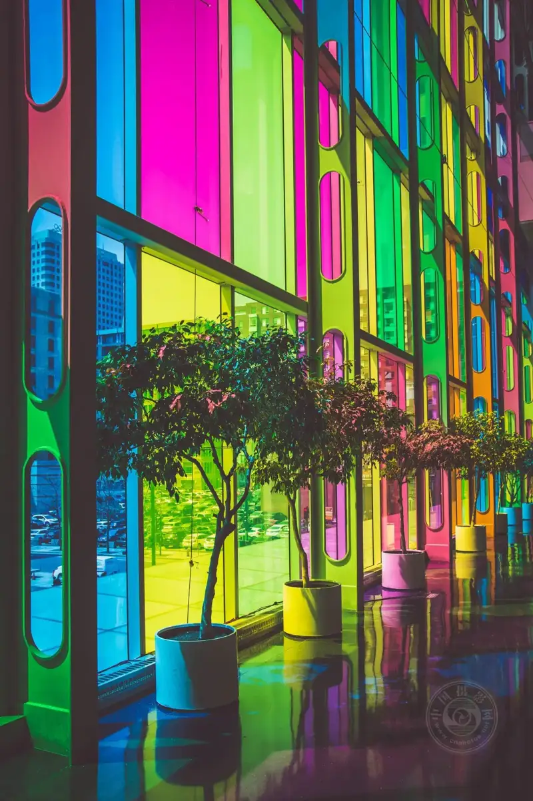

Published: 2023-05-17
Source link: https://www.cnphotos.net/academy/show-140.html
Like anything in life, learning photography means learning many things. You must often ask yourself, what should I do next? Or you may ask, what more can I do to make my photos better?
If you already know how to use the camera and the basics of composition, one of the next things to study is color combinations.
©Pranav Nahata
What makes one of two near-identical images look more appealing than the other? The answer lies in how the human brain reads color, or rather, in the combination of colors. Some color combinations make an image more appealing, or create a relaxed mood.
The secret of using color combinations well is not only knowing when to use them, but also knowing when to avoid them based on the mood you want.
©NOAA
The color wheel
Sir Isaac Newton created the color wheel in the mid-1600s, when he experimented with light through a prism. Since then, artists, photographers, and others have improved the wheel for its uses.

It is basically made of the color combinations you see here (image above).
There are two main color wheels for digital photographers: the RGB wheel and the RYB wheel. The image above is the RYB wheel.
Note that these two wheels handle color in different ways, so they have different complementary schemes. All of them work well for the images you shoot.
Complementary pairing combines any two colors on opposite sides of the wheel. Double-complementary or tetradic pairing uses two pairs of complements together (see the square diagram above).
©Elena Ramseier
Why use complementary colors?
There are several reasons to use complements.
Strong color contrast
Complements are highly contrasting. One comes from the warm side of the wheel (red, yellow, and anything between), and the other from the cool side (green, blue, purple, and anything between). They emphasize each other without losing color balance.
A good example of using warm and cool colors in equal amounts in an image.
©Christian Wiediger
Create several points of interest
Because complements stand out against each other, they can create several eye-catching points of interest.
Note that the lively look of complementary pairs is not always what you want. Sometimes you need to lower the energy (saturation or tone) of one or both to avoid competition between them and set a specific mood.
©Peter Ivey-Hansen
Notes on using complementary colors
For comparison, here is an RGB color wheel.

I know we do not control the color of our subjects. When you see a group of red and green buildings together, you cannot move them to rearrange them. The modern age gives us strong tools to recompose in post, such as cropping out the parts we do not need, until we get exactly the color balance we want.
You do not need to use each color in equal amounts.Use one color as the background and the other as the accent. Using the least color creates a strong point of interest.
Use different tints, shades, and highlightsThe different tints, shades, and highlights of the color or color family you choose add more interest.

Combine split complements.In this case, combine two neighboring colors of one complement with its opposite. For example, instead of red and green together, use red plus the two colors next to green: teal and yellow-green, or one of their tones (see the wheel above). You can also use a rectangle complementary scheme (such as purple plus orange and blue plus yellow) or a square complementary scheme (such as blue plus red-purple and orange and yellow-green).
©Red John
Case studies
Let us look at a few examples of why certain complements work well together.
Example 1: ©Tobie Schalkwyk
One of my favorite images: a malachite kingfisher. It is a great example of complements emphasizing each other. The warm tones (orange and tan) play against the cool tones (various blues).
Example 2: ©Tobie Schalkwyk
A beautiful lilac-breasted roller (a bird of the roller family). Here, the soft warm brown contrasts with almost all cool tones (from green, blue, and purple). To put it gently, it is a feast for the eyes.
Example 3: ©Tobie Schalkwyk
Notice how the warmth (the red shirt) creates a focal point against the cool (blue and green) background.
Example 4: ©Tom Barret
The warm colors of the old part of the city contrast with the cool colors of its modern part.
Example 5: ©Guzmán Barquín
A good example of using different tones of teal against its complement, red-orange. This photographer must be a true artist, knowing complements so well.
Finally
Color is a photographer's main tool for making stunning images. Black-and-white images set a mood, of course, but color images do too, even more so. Complements work well together to create areas of interest and hold the viewer's eye on your image.

©Felix Dubois-Robert
Use them a lot, and use them well. They will never let you down.